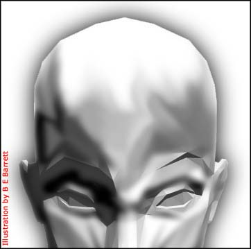

|
 nton
Szandor LaVey believed custom made, life-like dolls were better
companions for any modern Satanist since plastic, foam and rubber
could be easily manipulated to conform to the demands of misanthropy.
Humanity didn't deserve to share in the superior intellect and
sheer will held by his disciples. So, LaVey decided to turn the
tables on the Puritan conformists: he'd construct the perfect
companion according to his own needs and desires if the natural
world couldn't afford him this luxury. Never again shall a follower
of the dark side be lonely and misunderstood. Any clever Satanist
could have instant access to a perfectly constructed mate whose
only mission was to gratify his or her master. A slave whose
life depended on the charisma and vividness of the master's mind. nton
Szandor LaVey believed custom made, life-like dolls were better
companions for any modern Satanist since plastic, foam and rubber
could be easily manipulated to conform to the demands of misanthropy.
Humanity didn't deserve to share in the superior intellect and
sheer will held by his disciples. So, LaVey decided to turn the
tables on the Puritan conformists: he'd construct the perfect
companion according to his own needs and desires if the natural
world couldn't afford him this luxury. Never again shall a follower
of the dark side be lonely and misunderstood. Any clever Satanist
could have instant access to a perfectly constructed mate whose
only mission was to gratify his or her master. A slave whose
life depended on the charisma and vividness of the master's mind.
When he wasn't away on business, Mr.
LaVey would walk to my beauty salon to procure a few locks of
hair from my patrons. I'd make him wait in the bathroom in the
back, and even put some crossword puzzles in there for his amusement.
After a few hours of hair cutting, I swept the locks to the back
in piles where Mr. LaVey took his time filling up bags of it.
I guess nothing was too good for his mannequins. The customers
knew him only as my odd-ball friend, but were unaware that he
was also a master mathematician and the so-called Black Pope.
In his San Francisco home, he built
a nightclub to entertain his inanimate guests. It was a modest
one in the basement, complete with a pool table and a small bar-and-stool
set. The setup looked quite normal, except for the shiny pentagram
and the overabundance of black and red. Mr. LaVey loved spending
the nights with one, or both, of his meticulously decorated and
anatomically correct mannequins. He'd recount stories of doing
magic tricks for Sammy Davis, Jr., laugh at jokes he made up
about Jimmy Swaggart and especially liked dazzling them with
his pipe organ skills.
His mannequins never objected to Mr.
LaVey playing a song twice in a row and never refused a couple
minutes on the dance floor. When one mannequin was occupied,
the other one simply sat upright on the bar stool, relaxed in
delicate lingerie and waited for her name to be called. At the
end of the day, when they had more fun than they could handle,
Mr. LaVey lovingly tucked the two into their beds made of swan
feathers and laid a prayer of protection over their foreheads,
in nomine satanas.
The Black Pope Was a Friend of Mine
by Kevin Allen.
|